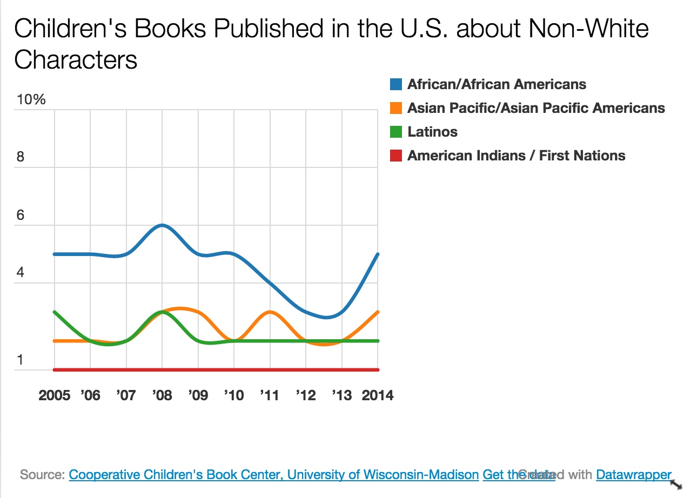
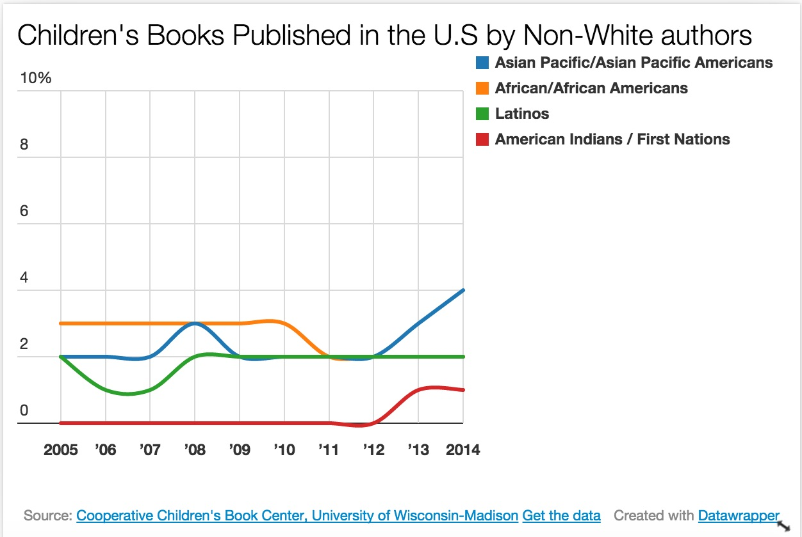

Diversity in Children's Book Publishing
by Samantha Lee
Time magazine's
list of the 100 Best Children's Books of All Time swells with tales of magical worlds and precocious kids; talking lions and marauding beasts. But there's one thing missing: diversity. Only four books of the hundred feature an African American child as the main character. Asian children appear in two. Latinos show up in exactly none.
Ever since the Cooperative Children's Book Center began collecting data on racial diversity in children's books in 1994, it has revealed a disproportionately low number of children's books written by authors of color. Books that feature main characters of color, too, are underrepresented in the industry. For the past decade, numbers of such books have remained almost stagnant, and comprise only a minuscule portion of children's books published overall in the U.S.


While the CCBC acknowledges that the remaining books are not all about white people -- some picture books feature animal characters, inanimate objects and other abstract topics -- program director Kathleen Horning conducted
a mid-year check in 2013. After excluding books about non-human subjects, she found that only 10.4 percent of children's books featured people of color.
The real-world effects of having a non-diverse catalogue of books are far-reaching. Christopher Myers, a children's book illustrator, describes an "apartheid of literature" in an
essay for the New York Times, in which "characters of color are limited to the townships of occasional historical books that concern themselves with the legacies of civil rights and slavery but are never given a pass card to traverse the lands of adventure, curiosity, imagination or personal growth". As a result, children of color are taught to circumscribe futures and possibilities for themselves. They "remain outside the boundaries of imagination".
An
industry survey conducted in 2015 by Lee & Low, an independent children's book publisher, showed that the publishing industry is overwhelmingly white. The racial demographics of people producing the books we, or our children, read, do not accurately reflect the population of the U.S today. While the industry comprises 79 percent white people, they make up only 63 percent of the U.S. population. Hispanics and African Americans are the most starkly underrepresented in the industry.
Such numbers demonstrate the persistence of a white-majority industry, even as the U.S is projected to become a
minority-majority nation in 2020. According to Census Bureau data, children of color in the country are inching towards
the majority.
Organizations such as We Need Diverse Books, a volunteer-run coalition, the CCBC are speaking out. The former has raised more than $300,000 towards supporting more diverse authors and educational initiatives in the classroom. Small independent publishers, such as Lee & Low, are making an effort to publish more diverse children's authors. While the uptick in books by and about African American characters in 2014 (see charts above) are promising, it remains to be seen if these efforts continue to bear fruit. In the meantime, the
difficult, necessary conversations about race in literature will continue.